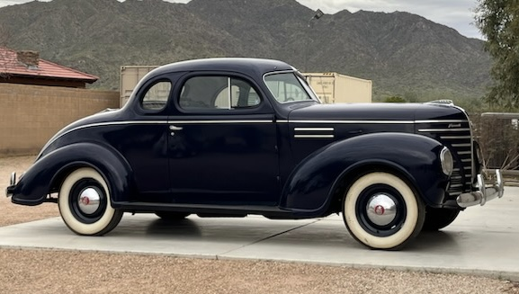
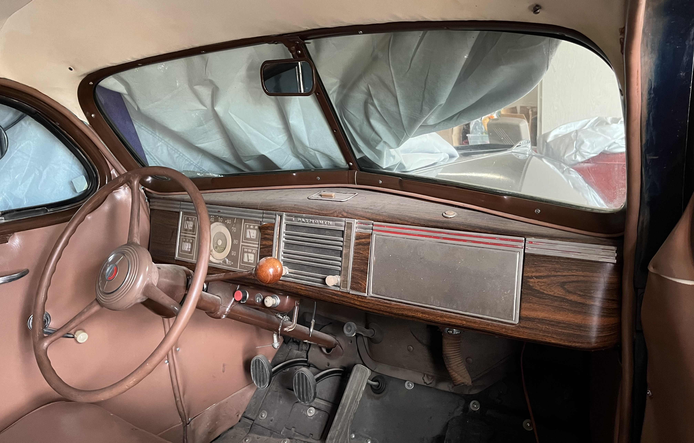
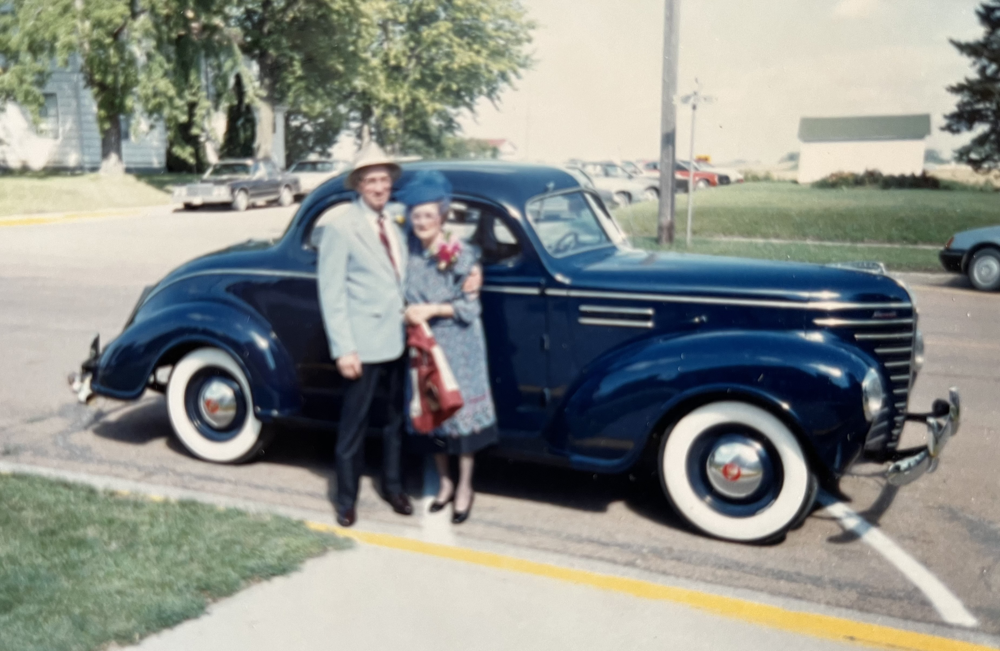
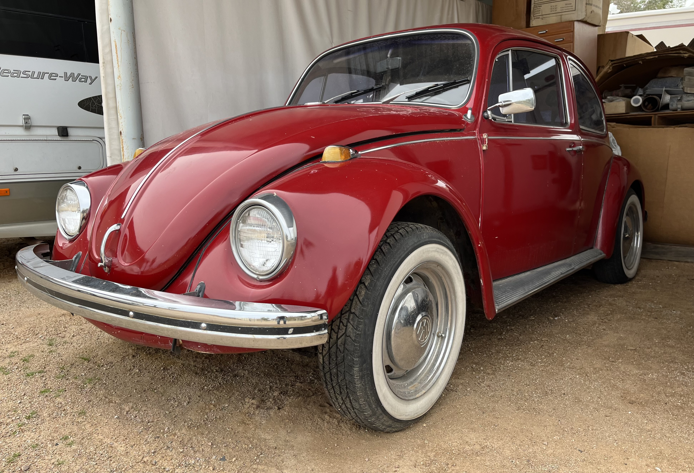
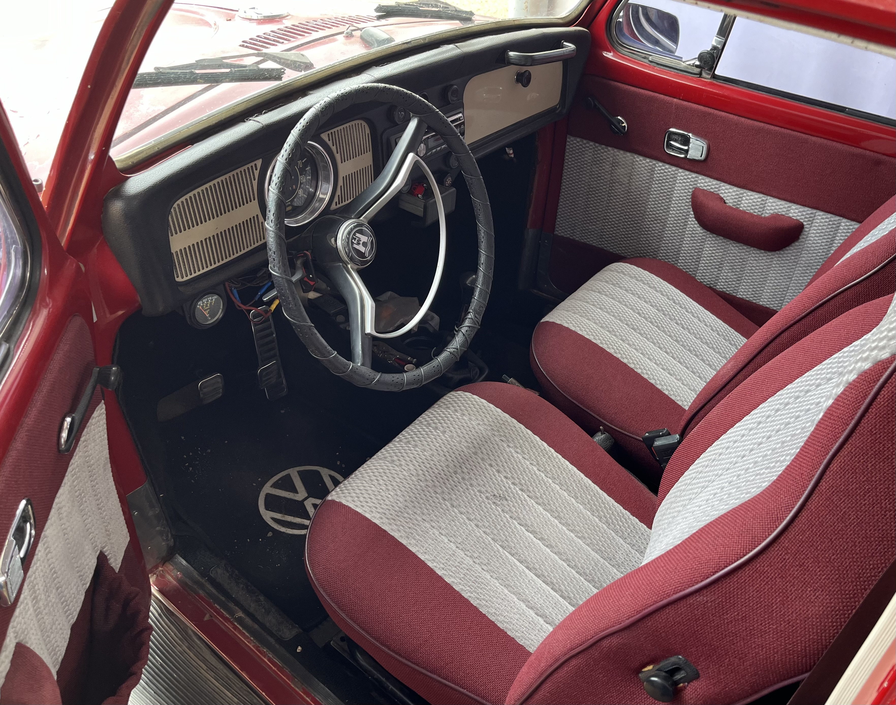
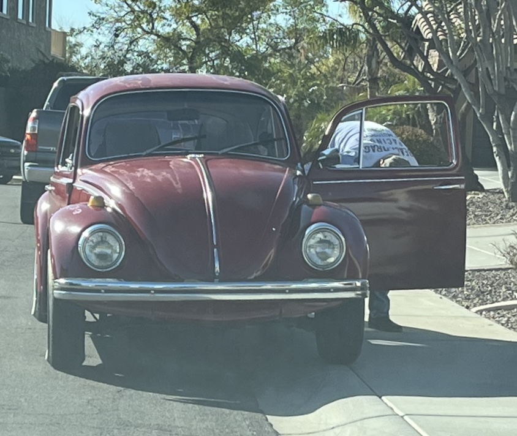
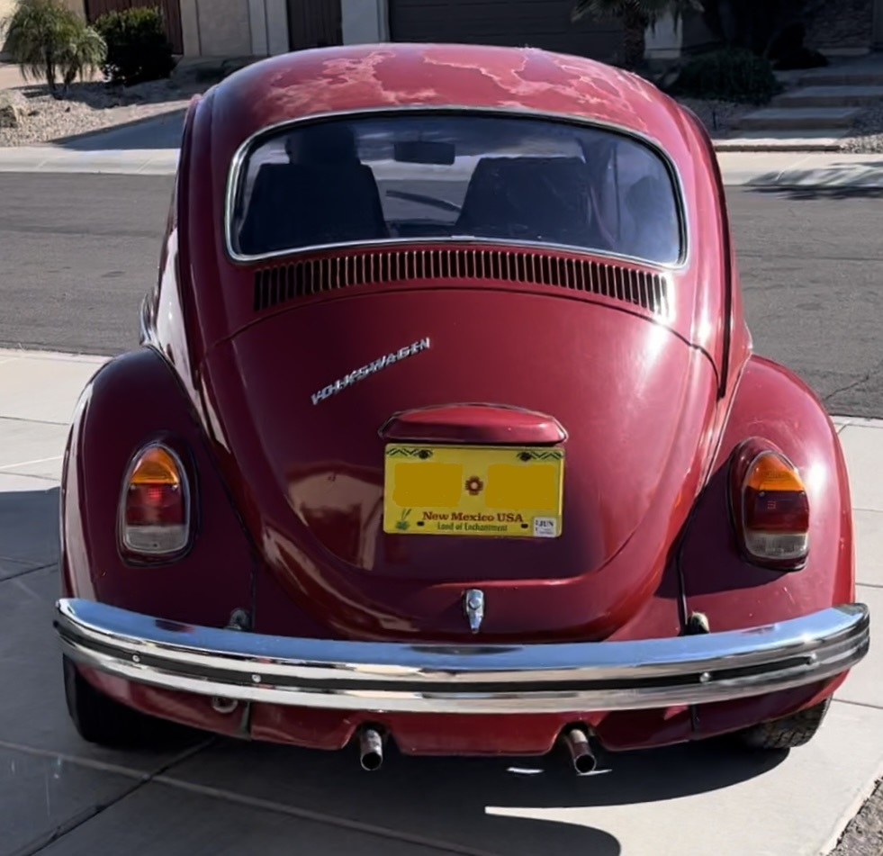
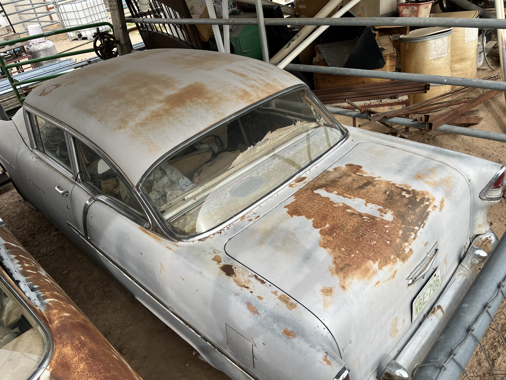
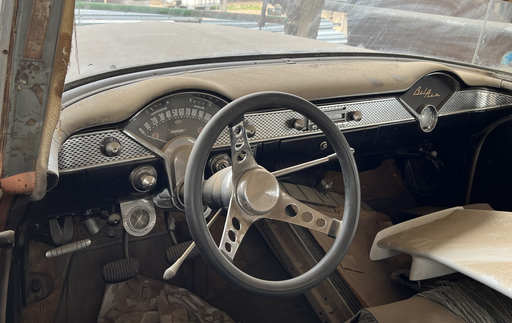
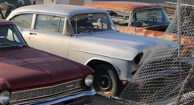

My Grandpa's Cars
The 1939 Plymouth Business Coupe
The 1939 Plymouth P8 Deluxe Business Coupe was initially purchased by my grandpa in 1988 from the original owner in Findlay, Ohio and transported to New Mexico. The car was not in the greatest condition at that time. The engine was not running, The electric and fuel systems needed evaluation, and the battery was not functional. However, the cosmetic elements of the car were in good condition. The paint and interior was in good shape, all of the wheels were attached, and the windows were functional.
The first thing that my grandpa did after purchasing the car was replace the package tray. It was damaged and a new one had to be welded on and painted, which he did. He then replaced the fuel pump and cleaned the gas tank. He fixed up the primary and secondary brake cylinders, and removed and repainted the running boards.
After restoring the car in New Mexico, it then was taken to Minnesota where my grandparents have a farm. My grandparents now live in Arizona and it sits on their ranch waiting to be restored again.
I Really like this car and hope to be able to drive it one day. After sitting for many years, it is not running, but I would like to fix it up. I think it would be really cool to be able to drive a car from so long ago, to get to experience what it was like back then. No plans are set to get it running again, but I would love to in the near future.
The 1969 Volkswagon Beetle
The 1969 Volkswagen Beetle 1500 2-door coupe was initially purchased in 2007 for $2,500 in Farmington, New Mexico. When my grandpa bought the car, it had been restored about five years earlier. The engine was in good operating condition, and the car was drivable. The interior was in good shape, the tires were acceptable, and the exterior paint was in good condition with a few minor repairs needed.
When my grandpa purchased the vehicle, he initially began repairing certain parts that he saw needed. He replaced the spark plugs, he made some adjustments to the carburetor, and he cleaned the fuel tank. It sat in New Mexico until 202 when it was brought to Arizona.
When I first learned about the car, I thought it would be a good first car to learn manual with. I worked with my dad and grandpa to get running after the 10 years of rest and we managed to get it into pretty good shape.
I love driving this car because it may look old on the outside, but the interior is modernized making the drive feel pleasant and fun. The car is not 100% perfect yet though. There are still some issues with the idling and it is not yet registered, but when we fix those problems, I will be driving it every chance I get.
The 1955 Chevy Bel Air
The 1955 Chevy Bel Air 2-door sedan was initially purchased by my grandfather in 1968 for $75. The car came stock with a 6-cylinder inline engine and a 3-speed manual transmission on the column. The interior was not the greatest. The front seat was badly torn, but the rear seats were acceptable. They were coral and gray to match the exterior color. All of the windows were functional and the rims were initially a coral color.
My grandfather drove it 50 miles home after purchasing it. The only problem was with this engine because over that 50 mile trip, it used two quarts of oil. That is not ideal when oil is very expensive. This led him to remove the original engine and buy a 327 cubic inch chevy v8 to replace it. He also installed an overdrive housing to the transmission and attached the manual overdrive control.
The entirety of the body was sanded, primed, and repainted skyline blue. He repainted the wheel rims white, installed new seat covers, and replaced the headliner.
He used the car during his last few years of college in the late sixties and early seventies. It was moved to Arizona in 1974, then moved to New Mexico in 1979 where it sat for 41 until being brought back to Arizona in 2020. The car currently sits not running on my grandparents’ ranch. I hope to get it running one day so my grandparents can recreate their first date which took place at a drive in movie theater in this same car.